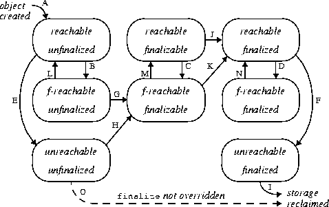

谈谈 finally final finalize 有什么不同¶
一： final¶
final可以用于成员变量（包括方法参数），方法、类。
final成员¶
作为变量
变量一旦被初始化便不可改变（对于基本类型，指的是值不变；对于对象类型，指的是引用不变），初始化只可能在两个地方：定义处和构造函数。
作为方法参数
对于基本类型，定义成final参数没有什么意义，因为基本类型就是传值，不会影响调用语句中的变量；对于对象类型，在方法中如果参数确认不需要改变时，定义成final参数可以防止方法中无意的修改而影响到调用方法。
final方法¶
- 不可覆写
- 编译器将对此方法的调用转化成行内（inline）调用，即直接把方法主体插入到调用处（方法主体内容过多的时候反而会影响效率）
final类¶
不可继承
二：finally¶
异常处理关键字，finally中的主体总会执行，不管异常发生是否。
当try中有return时执行顺序
return语句并不是函数的最终出口，如果有finally语句，这在return之后还会执行finally（return的值会暂存在栈里面，等待finally执行后再返回）
- 情况一（try中有return，finally中没有return）
public class finallyTest {
public static void main(String[] args) {
System.out.println(test());
}
public static int test() {
int num = 100;
try{
System.out.println("try");
return num;
}catch (Exception e){
e.printStackTrace();
}finally {
num = 200;
}
return num;
}
}
//返回 100
虽然在finally中改变了返回值num，但因为finally中没有return该num的值，因此在执行完finally中的语句后，test（）函数会得到try中返回的num的值，而try中的num的值依然是程序进入finally代码块前保留下来的值，因此得到的返回值为10。并且函数最后面的return语句不会执行。
- 情况二（try和finally中均有return）
public class finallyTest {
public static void main(String[] args) {
System.out.println(test());
}
public static int test() {
int num = 100;
try{
System.out.println("try");
return num;
}catch (Exception e){
e.printStackTrace();
}finally {
num = 200;
return num;
}
}
}
//返回 200
try中的return被”覆盖“掉了，不再执行。
- 情况三 将num的值包装在Num类中
/**
* @Author wenchaofu
* @DATE 15:21 2018/5/15
* @DESC
*/
public class finallyTest2 {
public static void main(String[] args) {
System.out.println(test().numnum);
}
public static Num test() {
Num num = new Num();
try{
System.out.println("try");
return num;
}catch (Exception e){
e.printStackTrace();
}finally {
System.out.println("finally");
num.numnum = 200;
}
return num;
}
}
class Num{
public int numnum = 10;
}
//返回 200
三：finalize¶
finalize的作用
- finalize()是Object的protected方法，子类可以覆盖该方法以实现资源清理工作，GC在回收对象之前调用该方法。
- finalize()与C++中的析构函数不是对应的。C++中的析构函数调用的时机是确定的（对象离开作用域或delete掉），但Java中的finalize的调用具有不确定性
- 不建议用finalize方法完成“非内存资源”的清理工作，但建议用于：① 清理本地对象(通过JNI创建的对象)；② 作为确保某些非内存资源(如Socket、文件等)释放的一个补充：在finalize方法中显式调用其他资源释放方法。其原因可见下文[finalize的问题]
finalize的问题
- 一些与finalize相关的方法，由于一些致命的缺陷，已经被废弃了，如System.runFinalizersOnExit()方法、Runtime.runFinalizersOnExit()方法
- System.gc()与System.runFinalization()方法增加了finalize方法执行的机会，但不可盲目依赖它们
- Java语言规范并不保证finalize方法会被及时地执行、而且根本不会保证它们会被执行
- finalize方法可能会带来性能问题。因为JVM通常在单独的低优先级线程中完成finalize的执行
- 对象再生问题：finalize方法中，可将待回收对象赋值给GC Roots可达的对象引用，从而达到对象再生的目的
- finalize方法至多由GC执行一次(用户当然可以手动调用对象的finalize方法，但并不影响GC对finalize的行为)
finalize的执行过程(生命周期)
首先，大致描述一下finalize流程：当对象变成(GC Roots)不可达时，GC会判断该对象是否覆盖了finalize方法，若未覆盖，则直接将其回收。否则，若对象未执行过finalize方法，将其放入F-Queue队列，由一低优先级线程执行该队列中对象的finalize方法。执行finalize方法完毕后，GC会再次判断该对象是否可达，若不可达，则进行回收，否则，对象“复活”。
具体的finalize流程：
对象可由两种状态，涉及到两类状态空间，一是终结状态空间 F = {unfinalized, finalizable, finalized}；二是可达状态空间 R = {reachable, finalizer-reachable, unreachable}。各状态含义如下：

- unfinalized: 新建对象会先进入此状态，GC并未准备执行其finalize方法，因为该对象是可达的
- finalizable: 表示GC可对该对象执行finalize方法，GC已检测到该对象不可达。正如前面所述，GC通过F-Queue队列和一专用线程完成finalize的执行
- finalized: 表示GC已经对该对象执行过finalize方法
- reachable: 表示GC Roots引用可达
- finalizer-reachable(f-reachable)：表示不是reachable，但可通过某个finalizable对象可达
- unreachable：对象不可通过上面两种途径可达
变迁说明：
- 新建对象首先处于[reachable, unfinalized]状态(A)
- 随着程序的运行，一些引用关系会消失，导致状态变迁，从reachable状态变迁到f-reachable(B, C, D)或unreachable(E, F)状态
- 若JVM检测到处于unfinalized状态的对象变成f-reachable或unreachable，JVM会将其标记为finalizable状态(G,H)。若对象原处于[unreachable, unfinalized]状态，则同时将其标记为f-reachable(H)。
- 在某个时刻，JVM取出某个finalizable对象，将其标记为finalized并在某个线程中执行其finalize方法。由于是在活动线程中引用了该对象，该对象将变迁到(reachable, finalized)状态(K或J)。该动作将影响某些其他对象从f-reachable状态重新回到reachable状态(L, M, N)
- 处于finalizable状态的对象不能同时是unreahable的，由第4点可知，将对象finalizable对象标记为finalized时会由某个线程执行该对象的finalize方法，致使其变成reachable。这也是图中只有八个状态点的原因
- 程序员手动调用finalize方法并不会影响到上述内部标记的变化，因此JVM只会至多调用finalize一次，即使该对象“复活”也是如此。程序员手动调用多少次不影响JVM的行为
- 若JVM检测到finalized状态的对象变成unreachable，回收其内存(I)
- 若对象并未覆盖finalize方法，JVM会进行优化，直接回收对象（O）
- 注：System.runFinalizersOnExit()等方法可以使对象即使处于reachable状态，JVM仍对其执行finalize方法
代码示例
public class GC {
public static GC SAVE_HOOK = null;
public static void main(String[] args) throws InterruptedException {
SAVE_HOOK = new GC();
SAVE_HOOK = null;
System.gc();
Thread.sleep(500);
if (null != SAVE_HOOK) { //此时对象应该处于(reachable, finalized)状态
System.out.println("Yes , I am still alive");
} else {
System.out.println("No , I am dead");
}
SAVE_HOOK = null;
System.gc();
Thread.sleep(500);
if (null != SAVE_HOOK) {
System.out.println("Yes , I am still alive");
} else {
System.out.println("No , I am dead");
}
}
@Override
protected void finalize() throws Throwable {
super.finalize();
System.out.println("execute method finalize()");
SAVE_HOOK = this;
}
}